DEJA ESPACIO PARA EL ASOMBRO

CONCEPTO
Un cordial saludo de...
Producciones Vacías es una productora de Madrid construida alrededor de una idea: suerte, azar y organización clandestina.
Su identidad toma referencias del imaginario corporativo underground, el crimen organizado y las tarjetas de visita del Chicago de los 70 y 80, reinterpretadas desde una mirada contemporánea.
La mano del logotipo representa producción, pacto y riesgo. El resto del sistema gráfico juega con esa misma lógica: lanzar una moneda al aire, jugársela y dejar que el azar haga el resto.
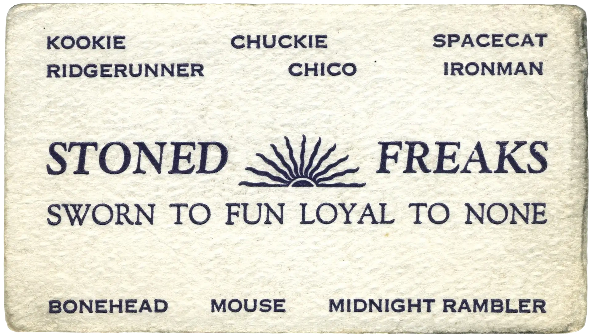

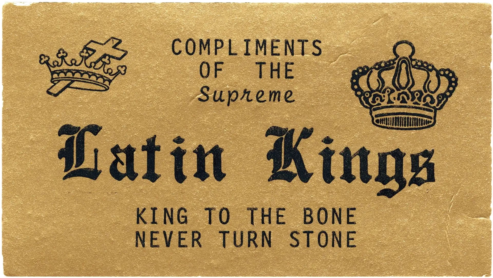
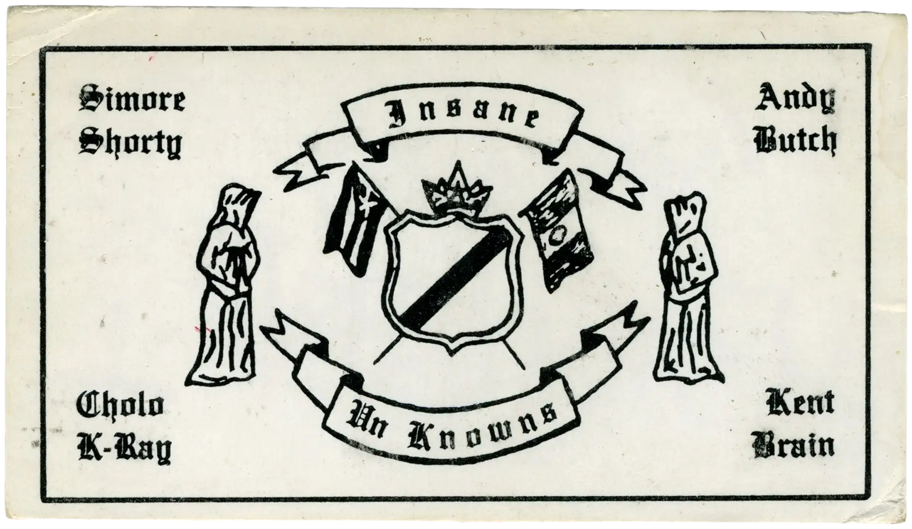
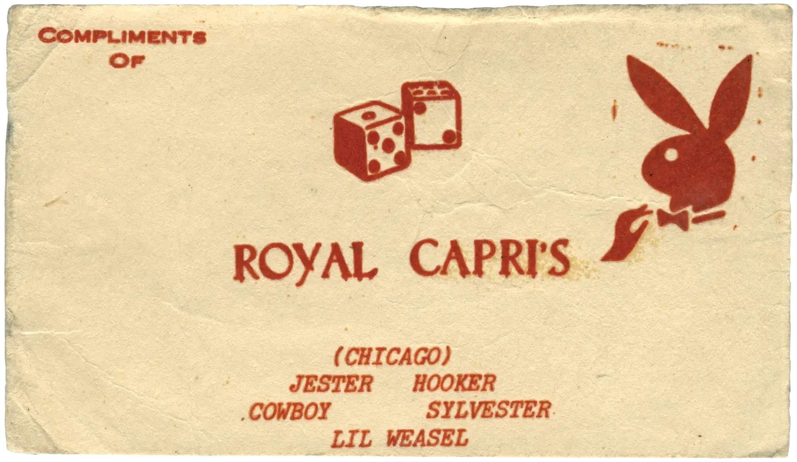
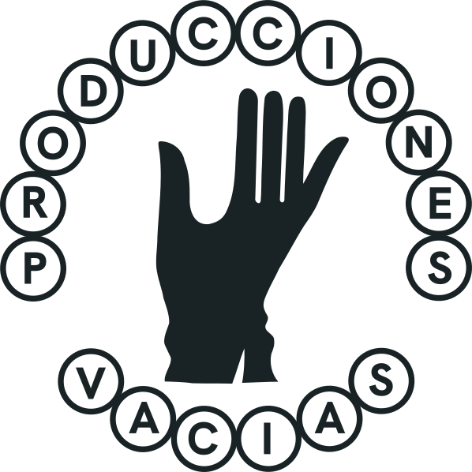
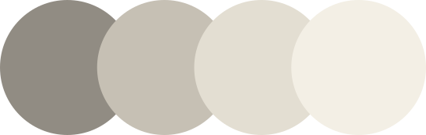
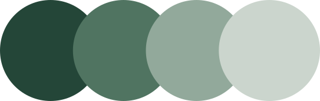
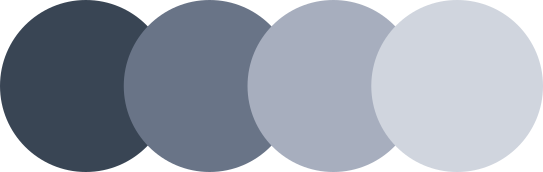
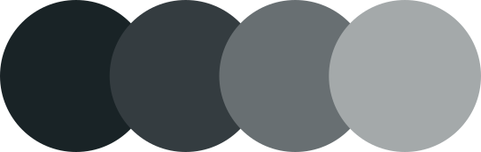
COLORES
Cortesia de...
Una paleta fría y desaturada que combina crema, verde, azul grisáceo y negro azulado.
El sistema busca mantener una identidad sobria, editorial y ligeramente analógica, con suficiente contraste para adaptarse a distintos soportes.
TIPOGRAFÍA
Hanken Grotesk
Hanken Grotesk es la tipografía principal de Producciones Vacías. Se elige por su construcción limpia, directa y funcional, y por un carácter ligeramente industrial que encaja con el universo gráfico de la marca.
Su neutralidad aporta orden y claridad frente a una identidad más cruda.
Para evitar un resultado demasiado digital, suele combinarse con una acción de Photoshop incluida en los assets de marca, que añade textura, desgaste e irregularidades propias de la impresión.
El resultado equilibra estructura e imperfección, sistema y accidente.
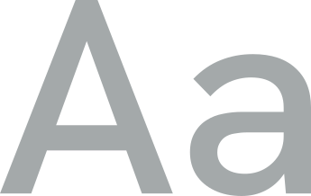
Texto
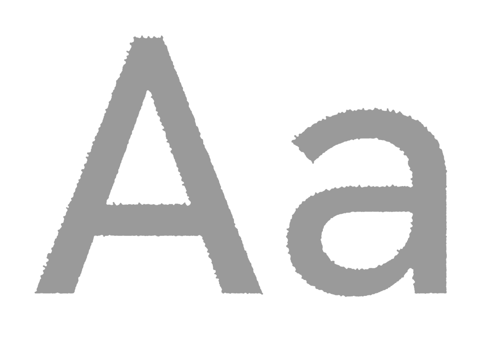
Texto con acción aplicada
Claims
Los claims de Producciones Vacías toman como referencia el lenguaje de tarjetas de visita, membresía y cortesía del imaginario corporativo y criminal de los años 70 y 80.
Se utilizan como encabezados, firmas o pequeñas frases dentro de las composiciones, aportando tono y reforzando el carácter de la marca.
- Profesionales de no hacer nada
- Un cordial saludo de…
- Cortesía de…
- Presentado por…
- Leales a…
- Nada que declarar.
- Sin plan... Buen gusto
- NadaQue perder
APLICACIONES
Cómo funciona


DESCARGAS
Brand Kit
LOGOTIPOS
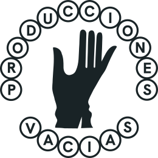

Descarga las distintas versiones del logotipo de Producciones Vacías preparadas para su uso en digital e impresión.
Incluye archivos en SVG y PNG, con variantes principales, monocromas y negativas.
PLANTILLAS Y ACCIONES

Descarga plantillas editables y acciones de Photoshop preparadas para aplicar el lenguaje visual de Producciones Vacías de forma consistente.
Incluye archivos PSD y acciones ATN para reproducir texturas, desgaste y efectos de impresión.
CARTELES

Descarga los carteles de Producciones Vacías preparados para impresión y publicación digital.
Incluye archivos editables y versiones finales en PSD, PDF y PNG.
TIPOGRAFIA

https://fonts.google.com/
Hanken+Grotesk
RESURSOS

Descarga los elementos gráficos de Producciones Vacías preparados para utilizarse en carteles, composiciones y piezas de comunicación.
Incluye recursos vectoriales en SVG listos para editar, escalar y combinar.